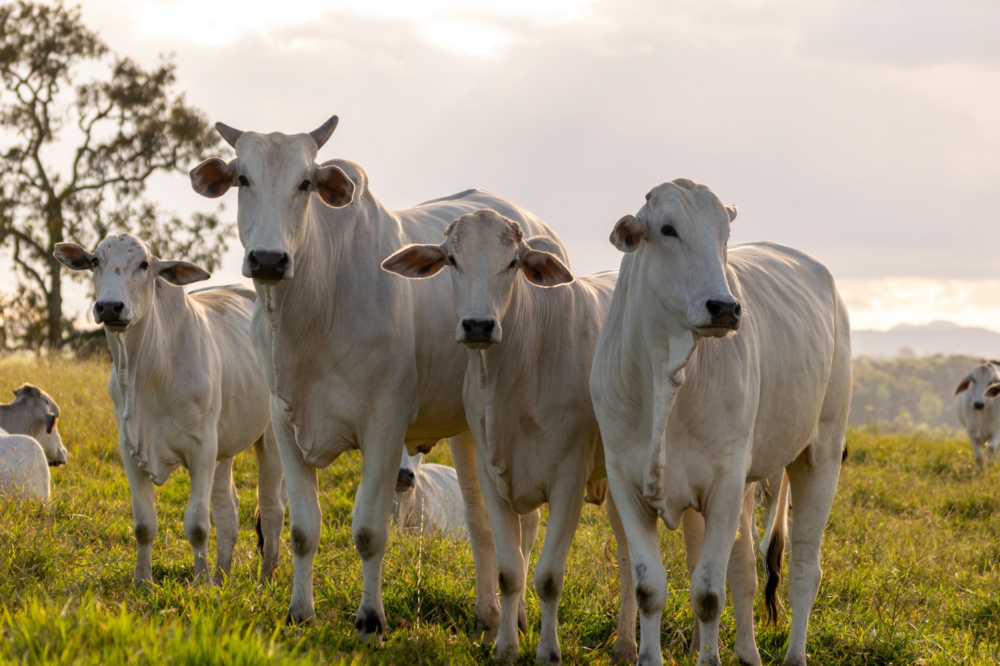

curral eletrônico
na interceção entre tradição e inovação, a pecuária moderna enfrenta moderna enfrenta o desafio de conciliar práticas tradicionais com as demandas crescentes por eficácia, produtividade e bem-estar.**Introdução:**
Nos últimos anos, o avanço tecnológico tem revolucionado diversos setores da sociedade, e a pecuária não é exceção. O curral eletrônico emerge como uma solução inovadora para os desafios enfrentados pelos pecuaristas, oferecendo maior eficiência e controle no manejo do gado. Por meio da integração de dispositivos eletrônicos e sistemas de automação, o curral eletrônico visa aprimorar a gestão do rebanho, otimizando processos e maximizando os resultados.
Objetivos
O principal objetivo do curral eletrônico é melhorar a eficiência operacional na pecuária, proporcionando benefícios tanto para os produtores quanto para os animais. Alguns dos objetivos específicos incluem:
1. Monitoramento Preciso: Utilizando tecnologias como sensores e câmeras, o curral eletrônico permite o monitoramento contínuo do comportamento e da saúde do gado, fornecendo dados valiosos em tempo real.
2. Controle de Acesso: Através de sistemas de identificação por radiofrequência (RFID) ou biometria, o curral eletrônico controla o acesso dos animais, garantindo a segurança e facilitando o manejo.
3. Gestão de Dados:Ao registrar e analisar informações sobre o desempenho individual dos animais, como peso, consumo de alimentos e padrões de comportamento, o curral eletrônico auxilia na tomada de decisões mais informadas e estratégicas.
4. Redução de Estresse: Automatizando tarefas repetitivas e minimizando a necessidade de manuseio físico, o curral eletrônico contribui para reduzir o estresse do gado, melhorando seu bem-estar e saúde geral.
de Serem Feitos
A implementação do curral eletrônico envolve a integração de diversas tecnologias e sistemas, adaptados às necessidades específicas de cada propriedade e rebanho. Alguns dos principais meios de construir um curral eletrônico incluem:
1. Instalação de Sensores: Sensores de temperatura, umidade, movimento e outras variáveis são instalados no curral para coletar dados ambientais e comportamentais dos animais.
2. **Utilização de RFID e Tecnologia de Identificação:** Dispositivos RFID são aplicados aos animais para identificação individual, permitindo o rastreamento e o controle do rebanho.
3. **Implantação de Sistemas de Automatização:** Portões automáticos, alimentadores automáticos e bebedouros controlados por sensores são integrados ao curral para automatizar tarefas como alimentação, acesso e distribuição de água.
4. **Implementação de Software de Gestão:** Sistemas de gestão pecuária são utilizados para processar e analisar os dados coletados, fornecendo insights úteis e facilitando a tomada de decisões.
5. **Treinamento e Capacitação:** É essencial proporcionar treinamento adequado aos funcionários responsáveis pelo manejo do curral eletrônico, garantindo que saibam utilizar todas as funcionalidades e ferramentas disponíveis de forma eficaz e segura.
Em suma, o curral eletrônico representa uma evolução significativa na pecuária moderna, oferecendo uma abordagem inovadora e eficiente para o manejo do gado. Ao adotar essa tecnologia, os pecuaristas podem melhorar a produtividade, a sustentabilidade e o bem-estar animal em suas operações.